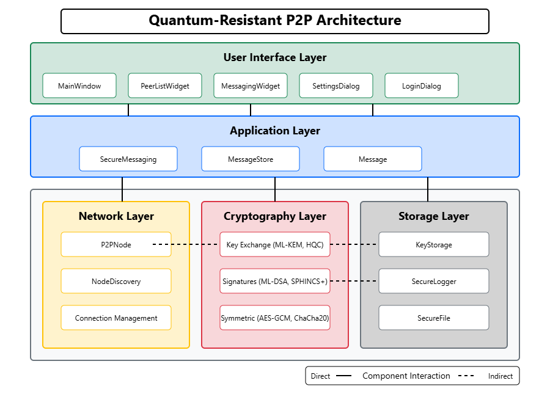

Dokumentace projektu Quantum-Resistant P2P¶
Úvod s popsanou problematikou¶
S příchodem kvantových počítačů bude mnoho současných kryptografických algoritmů, jako jsou RSA a ECC (Elliptic Curve Cryptography), považováno za nezabezpečené. Kvantové počítače mohou teoreticky prolomit tyto algoritmy v polynomiálním čase pomocí Shorova algoritmu, což představuje závažnou hrozbu pro současnou digitální bezpečnost.
Projekt Quantum-Resistant P2P řeší tento problém implementací post-kvantových kryptografických algoritmů pro zabezpečenou peer-to-peer komunikaci. Aplikace používá moderní kvantově odolné algoritmy schválené organizací NIST (National Institute of Standards and Technology), včetně:
- ML-KEM (dříve Kyber) - pro bezpečnou výměnu klíčů
- ML-DSA (dříve Dilithium) - pro digitální podpisy
- SPHINCS+ - jako alternativní algoritmus pro digitální podpisy založený na hašovacích funkcích
Tyto algoritmy jsou navrženy tak, aby odolaly útokům kvantových počítačů, zatímco nabízejí podobné nebo lepší bezpečnostní vlastnosti než současné standardy. Aplikace umožňuje uživatelům komunikovat pomocí textových zpráv a sdílet soubory s end-to-end šifrováním, které je zabezpečeno proti současným i budoucím kvantovým hrozbám.
Vývojový diagram programu s popisem funkčnosti¶
Aplikace je postavena na modelu vrstev, kde každá vrstva poskytuje specifickou funkčnost a komunikuje s ostatními vrstvami prostřednictvím definovaných rozhraní:
 Aplikace se skládá z následujících klíčových komponent organizovaných ve vrstvách:
1.1 Síťová vrstva¶
- P2PNode: Zpracovává přímé peer-to-peer spojení, přenos zpráv a správu připojení
- NodeDiscovery: Poskytuje mechanismy pro objevování dalších peerů v síti
1.2 Kryptografická vrstva¶
- Key Exchange: Implementuje post-kvantové algoritmy výměny klíčů
- Symmetric Encryption: Poskytuje autentizované šifrování
- Digital Signatures: Implementuje post-kvantová schémata podpisů
- KeyStorage: Bezpečně ukládá kryptografické klíče
1.3 Aplikační vrstva¶
- SecureMessaging: Koordinuje kryptografické operace pro bezpečnou komunikaci
- SecureLogger: Poskytuje šifrované protokolování událostí
- MessageStore: Ukládá a spravuje historii konverzací
1.4 Uživatelské rozhraní¶
- MainWindow: Hlavní okno aplikace s menu a stavovým řádkem
- MessagingWidget: UI pro konverzace a přenos souborů
- PeerListWidget: UI pro zobrazování a interakci s peery
- Settings Dialogs: Dialogy pro konfiguraci kryptografických nastavení
- Security Dialogs: Prohlížeč historie klíčů, protokolů a metrik zabezpečení
Popis toku dat v aplikaci:¶
- Inicializace a přihlášení:
- Aplikace začíná v
__main__.py, kde se inicializujeMainWindow - Uživatel je vyzván k zadání hesla přes
LoginDialog -
Heslo odemyká
KeyStorage, které zpřístupní uložené kryptografické klíče -
Objevování peerů:
NodeDiscoveryautomaticky vysílá oznámení do sítě- Jiné instance aplikace tato oznámení zachytí a přidají uzly do seznamu dostupných peerů
-
PeerListWidgetzobrazuje tyto peery v uživatelském rozhraní -
Navázání spojení:
- Uživatel vybere peera a iniciuje spojení
P2PNodevytvoří TCP spojení s vybraným peerem-
SecureMessaginginicializuje výměnu kvantově odolných klíčů:- Vygeneruje dočasný pár klíčů pomocí
KeyExchangeAlgorithm(ML-KEM) - Provede výměnu klíčů s peerem
- Odvodí symetrické klíče pro šifrování
- Vygeneruje dočasný pár klíčů pomocí
-
Zabezpečená komunikace:
- Uživatel napíše zprávu v
MessagingWidget SecureMessagingpodepíše zprávu pomocíSignatureAlgorithm(ML-DSA)- Zpráva je zašifrována pomocí
SymmetricAlgorithm(AES-256-GCM) - Šifrovaná zpráva je poslána přes
P2PNodeke vzdálenému peeru - Na straně příjemce je zpráva dešifrována a ověřena
-
Text zprávy je zobrazen v
MessagingWidget -
Přenos souborů:
- Funguje na stejném principu jako textové zprávy
- Velké soubory jsou rozděleny na části (chunky) pro efektivní přenos
-
Po přijetí jsou části znovu složeny do původního souboru
-
Bezpečnostní protokolování:
SecureLoggerzaznamenává všechny bezpečnostní události- Záznamy jsou šifrovány a chráněny proti manipulaci
- Uživatel může prohlížet protokoly přes
LogViewerDialog
Klíčové aspekty zabezpečení:¶
- Dopředná bezpečnost (Forward Secrecy): Pro každou relaci se generují nové páry klíčů
- Autentizovaná šifra: Používá AEAD (Authenticated Encryption with Associated Data)
- Post-kvantová odolnost: Všechny kryptografické algoritmy jsou odolné proti kvantovým útokům
- Ochrana metadat: Kritická metadata jsou vázána na šifrový text s ochranou integrity
Popis instalace¶
Systémové požadavky¶
- Python 3.8 nebo vyšší
- Podporované operační systémy: Windows, macOS, Linux
Instalace s virtuálním prostředím (doporučeno)¶
# Naklonujte repozitář
git clone https://github.com/DivinityQQ/quantum-resistant-p2p.git
cd quantum_resistant_p2p
# Vytvořte virtuální prostředí
python -m venv venv
# Aktivujte virtuální prostředí
# Na Windows:
venv\Scripts\activate
# Na macOS/Linux:
source venv/bin/activate
# Instalace projektu
pip install .
Instalace v režimu vývojáře¶
Popis spuštění programu¶
Základní spuštění¶
# Ujistěte se, že je virtuální prostředí aktivováno
# (venv) by mělo být viditelné na začátku příkazového řádku
# Spuštění aplikace
python -m quantum_resistant_p2p
Návod k použití¶
- První spuštění:
- Při prvním spuštění budete vyzváni k vytvoření hesla
-
Toto heslo bude použito k zabezpečení vašich kryptografických klíčů
-
Připojení k peerům:
- Aplikace automaticky vyhledá peery v místní síti
- Pro ruční připojení použijte menu File > Connect to Peer
-
Zadejte IP adresu a port peeru
-
Ustanovení bezpečného spojení:
- Vyberte peera ze seznamu
- Klikněte na "Establish Shared Key" pro vytvoření zabezpečeného kanálu
-
Po úspěšné výměně klíčů se zobrazí "Secure Connection Established"
-
Zasílání zpráv:
- Pište zprávy do textového pole ve spodní části okna
-
Stiskněte Enter nebo klikněte na "Send" pro odeslání
-
Přenos souborů:
- Použijte menu File > Send File nebo tlačítko "Send File"
- Vyberte soubor k odeslání
-
Přijatý soubor můžete uložit kliknutím pravým tlačítkem na oznámení o přijetí
-
Nastavení kryptografie:
- V menu Settings > Cryptography Settings můžete změnit používané algoritmy
- Pro prohlížení bezpečnostních metrik použijte Settings > Security Metrics
- Historie klíčů je dostupná v Settings > Key Exchange History
Příklad použití pro ověření funkčnosti¶
Pro ověření funkčnosti aplikace můžete spustit dva instance na jednom počítači:
- Otevřete dva terminály a aktivujte v nich virtuální prostředí
- V prvním terminálu spusťte:
- Ve druhém terminálu spusťte:
- Tím se vytvoří dvě instance aplikace, které se automaticky propojí
- Můžete pozorovat výměnu zpráv a ověřit funkčnost přenosu souborů
Použité externí knihovny a jejich verze¶
Projekt využívá následující externí knihovny:
- asyncio (≥3.4.3) - Pro asynchronní zpracování
- aiohttp (≥3.11.14) - Pro HTTP komunikaci
- qasync (≥0.27.1) - Pro propojení asyncio s Qt
- cryptography (≥44.0.2) - Pro kryptografické operace
- pynacl (≥1.5.0) - Pro implementaci ChaCha20-Poly1305
- PyQt5 (≥5.15.11) - Pro uživatelské rozhraní aplikace
- pyyaml (≥6.0.2) - Pro práci s YAML konfigurací
- python-dotenv (≥1.0.1) - Pro načítání proměnných prostředí
- structlog (≥25.2.0) - Pro strukturované protokolování
Tyto závislosti jsou definovány v souborech setup.py a requirements.txt.
Popis kódu¶
Projekt je strukturován do několika modulů, které odpovídají vrstvám architektury:
Networking¶
- P2PNode (
networking/p2p_node.py): Hlavní třída pro peer-to-peer komunikaci start(): Spustí P2P uzel a začne naslouchat spojeníconnect_to_peer(): Připojí se k jinému uzlu v síti-
send_message(): Pošle zprávu připojenému peeru -
NodeDiscovery (
networking/discovery.py): Služba pro objevování peerů start(): Spustí službu objevování uzlů_send_announcement(): Vysílá oznámení o přítomnosti uzluget_discovered_nodes(): Získá seznam objevených uzlů
Crypto¶
- KeyExchangeAlgorithm (
crypto/key_exchange.py): Abstraktní třída pro algoritmy výměny klíčů - Konkrétní implementace:
MLKEMKeyExchange,HQCKeyExchange,FrodoKEMKeyExchange generate_keypair(): Generuje nový pár klíčůencapsulate(): Zapouzdří sdílené tajemství pomocí veřejného klíče příjemce-
decapsulate(): Rozbalí sdílené tajemství pomocí soukromého klíče -
SymmetricAlgorithm (
crypto/symmetric.py): Abstraktní třída pro symetrické šifrování - Konkrétní implementace:
AES256GCM,ChaCha20Poly1305 encrypt(): Šifruje data s podporou přidružených dat (AEAD)-
decrypt(): Dešifruje data a ověřuje integritu -
SignatureAlgorithm (
crypto/signatures.py): Abstraktní třída pro digitální podpisy - Konkrétní implementace:
MLDSASignature,SPHINCSSignature sign(): Vytvoří podpis zprávy pomocí soukromého klíče-
verify(): Ověří podpis pomocí veřejného klíče -
KeyStorage (
crypto/key_storage.py): Bezpečné úložiště pro kryptografické klíče unlock(): Odemkne úložiště pomocí heslastore_key(): Uloží klíč do úložištěget_key(): Získá klíč z úložištěchange_password(): Změní heslo pro úložiště
App¶
- SecureMessaging (
app/messaging.py): Koordinuje kryptografické operace pro komunikaci initiate_key_exchange(): Zahájí výměnu klíčů s peeremsend_message(): Bezpečně odešle zprávu (podepsání, šifrování, přenos)-
send_file(): Bezpečně odešle soubor -
Message (
app/messaging.py): Datová třída reprezentující zprávu to_dict(): Převede zprávu na slovník (včetně kódování binárních dat)-
from_dict(): Vytvoří zprávu ze slovníku -
SecureLogger (
app/logging.py): Poskytuje zabezpečené protokolování log_event(): Zaznamená bezpečnostní událostget_events(): Získá zaznamenané události s filtrovánímget_security_metrics(): Poskytuje metriky zabezpečení
UI¶
- MainWindow (
ui/main_window.py): Hlavní okno aplikace _init_network(): Inicializuje síťové komponenty_init_ui(): Inicializuje uživatelské rozhraní-
_start_network(): Asynchronně spustí síťové služby -
MessagingWidget (
ui/messaging_widget.py): Widget pro zasílání zpráv _on_send_clicked(): Zpracuje požadavek na odeslání zprávy_send_file(): Zpracuje odeslání souboru-
handle_message(): Zobrazí přijatou zprávu -
PeerListWidget (
ui/peer_list.py): Widget pro zobrazení a správu peerů update_peers(): Aktualizuje seznam peerů-
_on_connect_clicked(): Zpracuje požadavek na připojení k peeru -
Dialogs: Různé dialogy pro nastavení a zobrazení informací
LoginDialog: Dialog pro přihlášení (odemknutí úložiště klíčů)SettingsDialog: Dialog pro nastavení kryptografických algoritmůLogViewerDialog: Dialog pro zobrazení bezpečnostních protokolůKeyHistoryDialog: Dialog pro zobrazení historie výměny klíčů
Závěr¶
Projekt Quantum-Resistant P2P úspěšně dosáhl stanovených cílů:
-
Implementace post-kvantových algoritmů: Aplikace využívá nejmodernější post-kvantové algoritmy schválené NIST pro zajištění bezpečnosti proti budoucím kvantovým útokům.
-
Uživatelsky přívětivé rozhraní: Projekt poskytuje intuitivní grafické rozhraní pro snadné používání pokročilých kryptografických funkcí.
-
Bezpečná komunikace: Implementace zajišťuje end-to-end šifrovanou komunikaci s dopřednou bezpečností a autentizací všech zpráv.
-
Bezpečný přenos souborů: Umožňuje šifrovaný přenos souborů libovolné velikosti mezi peery.
-
Transparentnost bezpečnosti: Nabízí podrobné protokolování a metriky bezpečnosti, které uživatelům umožňují sledovat bezpečnostní vlastnosti komunikace.
-
Flexibilita kryptografických nastavení: Uživatelé mohou vybírat a přizpůsobovat kryptografické algoritmy podle svých potřeb a požadavků na zabezpečení.
-
Multiplatformní podpora: Aplikace funguje na různých operačních systémech bez změny kódu.
Quantum-Resistant P2P představuje komplexní řešení pro bezpečnou komunikaci, které je připraveno na éru kvantových počítačů. Díky modulární architektuře a používání standardizovaných algoritmů je aplikace připravena adaptovat se na budoucí vývoj v oblasti post-kvantové kryptografie.